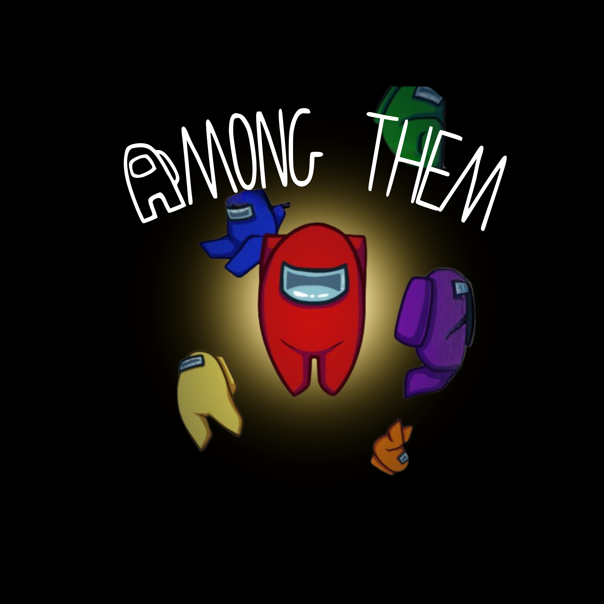

Inspired by the classic party game “Mafia,” Among Us is a multiplayer online murder mystery game where players assume the roles of astronauts working together to maintain their spaceship. At the beginning of a match, participants are secretly divided into two roles: crewmates and hidden impostors. The primary objective of the crewmates is to complete all their onboard tasks while identifying the saboteurs or impostors hidden among them; achieving either goal secures a crewmate victory. Conversely, the impostors aim to covertly sabotage operations and eliminate crewmates while pretending to perform tasks to blend in. The impostors win if they reduce the crew's numbers until they match the number of impostors, or if they trigger a critical system failure that the crew fails to fix before time runs out. The game's primary social element occurs when a player reports a dead body or triggers an emergency meeting. This forces all surviving players into the in-game chatbox to debate and either vote to banish a suspected impostor or skip the round entirely. Here, crewmates can either turn against each other or successfully identify the impostor.

Concept Paper Writing
Assigned to: Sean Emman Nicolas
Jabril Arnold Cinense
Synthesis Writing
Assigned to: Kylie Nicoli Zaratan
Lyle Joy Ortiz
Metacommunication Analysis Writing
Assigned to: Yoj Ethan Manalang
Sean Emman Nicolas
Model of Communication Designing
Assigned to: Jabril Arnold Cinense
Joseph Dos Mongcal
Model of Communication Presentation
Assigned to: Joseph Dos Mongcal
Kylie Nicoli Zaratan
Photo-Video Documention
Assigned to: Lyle Joy Ortiz
Yoj Ethan Manalang